Microsoft Defender Phishing Simulation
Microsoft Defender is the security solution found within Microsoft 365 subscriptions. There are many iterations of Microsoft Defender, including Endpoint, Office 365, and for Cloud apps. This product allows organizations to understand their security posture, analyze threats, and much more. Of course, as the title describes, we will be using the “Attack Simulator” option found within Microsoft Defender.
Some preparation I have made includes creating a Microsoft 365 account. The license I am using is the trial version of E5, which will include more options than cheaper derivatives such as E3 or F3. The E5 has more options when it comes to security, including Microsoft’s ATP (Advanced Threat Protection), Azure Premium 2, and more options with Intune (Microsoft’s MAM and MDM solution). After creating the free account, the next step is to add users. By default, you should have Global Administrator rights which gives you access to pretty much everything within Microsoft 365, including creating users.
When creating users, it is important to assign the correct licenses in order to complete the Attack Simulation. In this case, we will be creating a phishing attempt using a URL link found inside an email. For that, I have assigned each user an Exchange Online license so a mailbox will be created for them.
This next step is not necessary, but I did enable MFA (Multi-factor authentication) through Entra ID (also known as Azure Active Directory). I re-logged in with my credentials and was prompted to download the Microsoft Authenticator app, which is Microsoft’s software token solution. If you remember from the eSIM article, using push notifications through software tokens is generally safer than doing so from SMS.
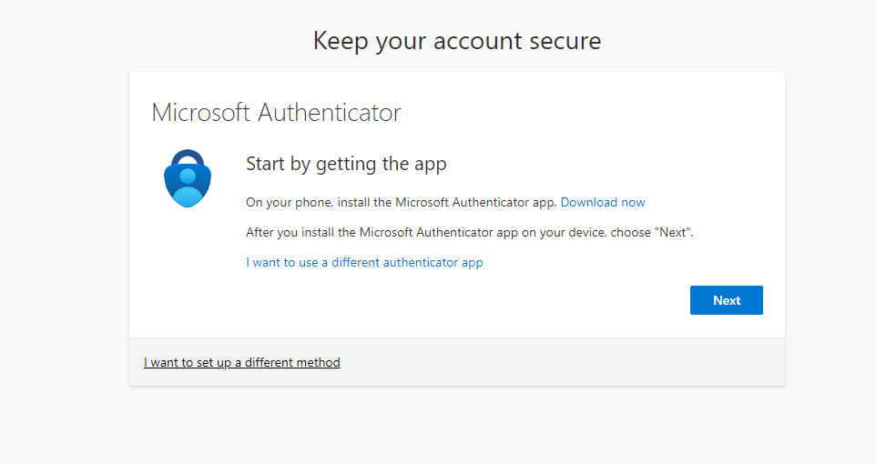After users have been created, I also created a group called “IT” and assigned a user named Andrew White to the group. This is not really necessary for the Attack Simulation but makes it easier to choose the mailboxes I want the phishing attempt sent to. Since I just created the accounts for the users, I would like to reset passwords.
Within the Microsoft 365 admin portal, on the left-hand side, select “Users” and then select “Active users”
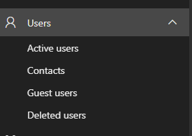I then selected the user I would like to reset the password for, in this case Andrew White. After generating a temporary password, I went to Outlook to sign Andrew in. Here you can see, Andrew is given the option to bypass MFA for up to 14 days.
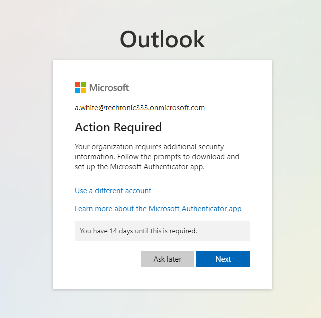Now that we have Andrew all signed in and the mailbox created, we can proceed with creating the simulation. In the Microsoft 365 admin portal, select the “Security” option which is also found on the left-hand side of the portal.
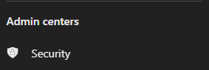The security option within the Microsoft 365 admin portal will take us to Microsoft Defender. To find the attack simulation option, look on the left-hand side and select “Attack Simulation training”
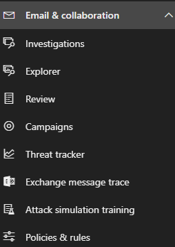This section of Microsoft Defender has many options and even offers training on how to utilize the tool. Within the first window, you will have an option to “Launch instant simulation” or “Launch your own simulation”. To keep things simple, I will be using the “Launch instant simulation”.
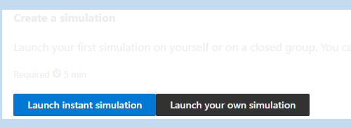After, Microsoft will ask if you want to run multiple simulations or a single simulation. Launching multiple simulations will give you more options and can even be configured to only launch if specific events occur. Again for simplicity, I will be selecting the single simulation option.
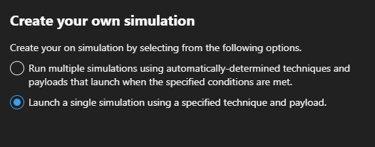The next option is to select the “payload” you would like to use. This can be malware links, URLs that involve drive-by downloads, and credential theft. I will be selecting the “Credential harvest” option. This option will create a fake URL that spoofs a legitimate webpage, promoting the user to enter their credentials. Of course, this will not be going to the expected organization but to the threat actor.

Microsoft will then prompt you to create a name and description of the simulation campaign.
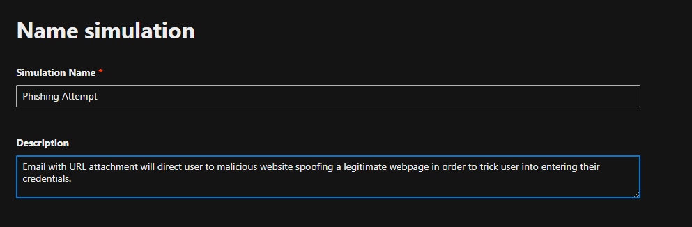Next, we can select what kind of phishing email we would like sent. There are a vast majority to choose from, including password reset spoofs, missed calls, expired subscriptions, or invites to Zoom meetings. Each option is rated based on Microsoft’s expected failure rate. Generally, those that are spoofing Microsoft services tend to have a higher score.
If I were to try to be as tricky as possible, since this account is new, it may seem to be a legitimate request to ask for a password reset so this will be the option I will go with. Microsoft estimates that 21% of users will fail the simulation.
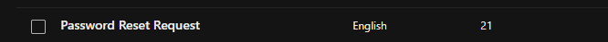Next, we will determine what users and/or groups we would like involved in the simulation. Since I know I added Andrew White within the “IT” department, I will select this option.
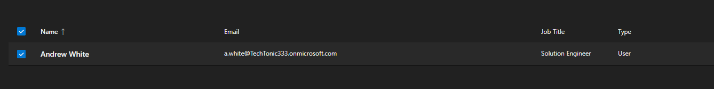In the event a user fails the phishing attack, Microsoft gives an option to require additional training for users. This can be selected manually or training modules can be determined by Microsoft. You can also select a due date for the training.
If the link within the email is selected, we can configure a landing page. You can have Microsoft use a random URL or you can use a custom URL to make the webpage more believable. You can also add payload indicators to the email. This may mimic a real phishing attempt from an external source as Outlook will generally display indicators to create caution in users. For this simulation, I have this option selected and decided to go with Template 1 for the landing page.
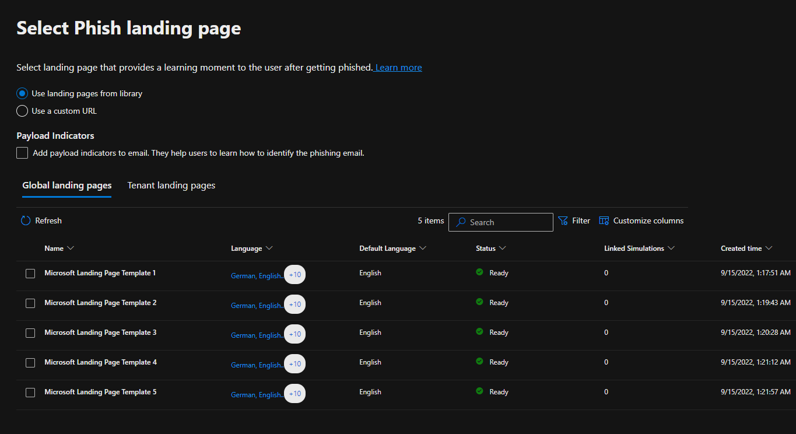Next, we can select additional training or notifications to the user after the simulation has completed. Microsoft recommends sending training reminders and positive reinforcements
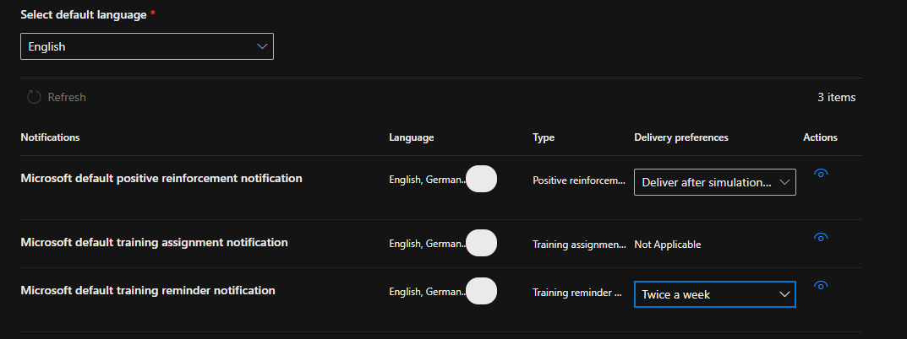After the simulation attack is submitted, we will go back to Andrew White’s inbox to find the password reset email was successfully sent.
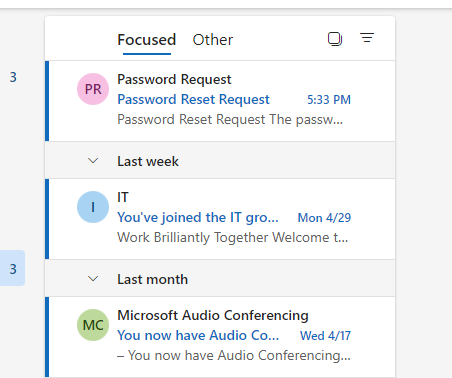Taking a look at the email, there are a couple of indicators that could be used to determine that this is a phishing email. The email domain does not match our organization and only uses a first name which is unusual for most organizations. Outlook displays an indicator that this is an external email and that some contents have been blocked. Within the “Disclaimer” section, the threat actor does not permit the email being sent to other recipients without first talking to the sender. A message like this in a real attempt may cause users to not send the email to their security team for analysis.
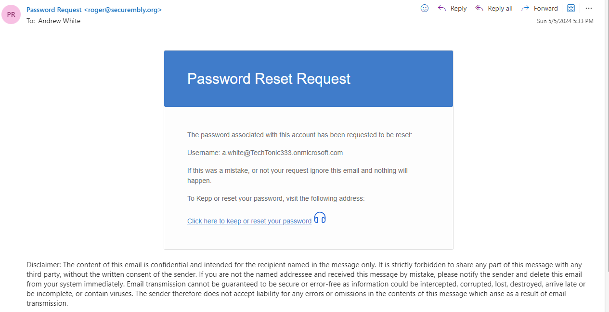After clicking the link and entering the user's credentials, we are brought to this page. Unfortunately, we have failed this phishing simulation but hopefully after some additional training we will not fall for it again or real attempts in the future.
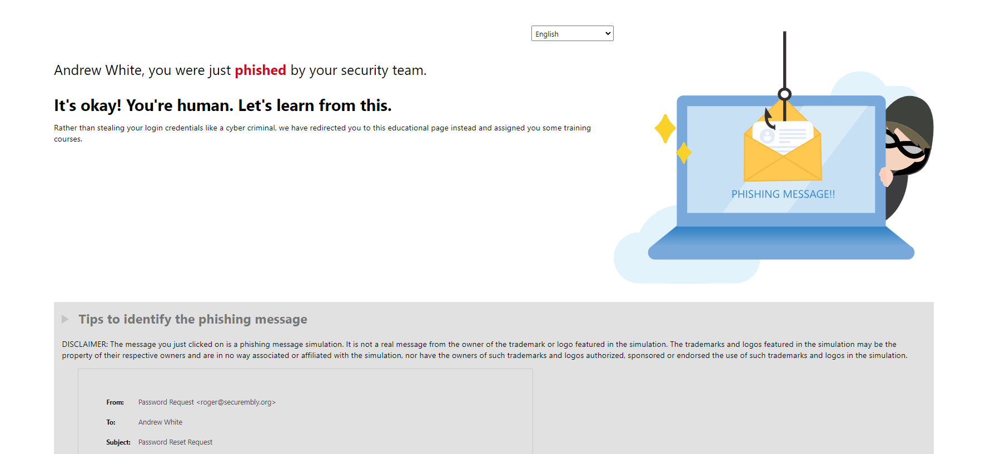